| 日付 | 2017年3月19日（日） |
|---|---|
| 山域 | 房総 |
| メンバー | 家族（妻、長女・6歳、長男・3歳） |
| 山行形態 | 子連れ日帰り |
| アクセス | 車 |
| ルート (Map) | 清澄寺駐車場 (8:47) - (8:56) 清澄寺 (9:19) - (10:36) 妙法生寺 - (10:58) 初日山 (11:37) - (13:15) 清澄寺 - (13:22) 妙見山 - (13:45) 清澄寺 |
この冬はまだ房総の山に行っていないため、房総から一山選んでみる。
あまりめぼしい山はないのだが、比較的有名な清澄山をターゲットにする。
人工物ばかりで、あまり良い道は無いのだが、一度くらいは行っておいても良いだろう。
標高は377mで千葉県の中では高い山だ。
清澄寺の側にある無料駐車場に車を停める。標高310m。
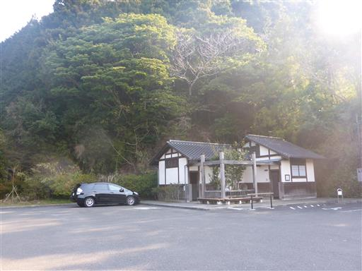
無料駐車場は寺から少し離れているため、しばらく車道を歩く。
道沿いには土産物屋がいくらか並んでいる。
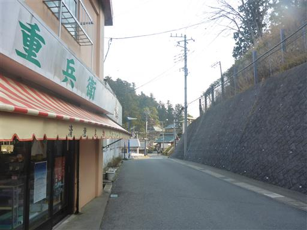
周囲は山奥深くの田舎の集落だ。
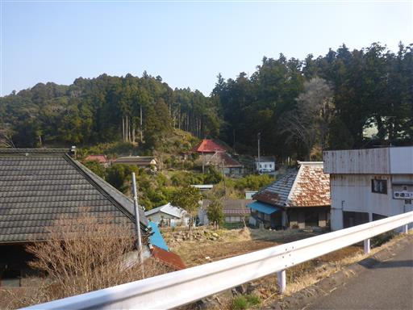
清澄寺の山門に到着する。
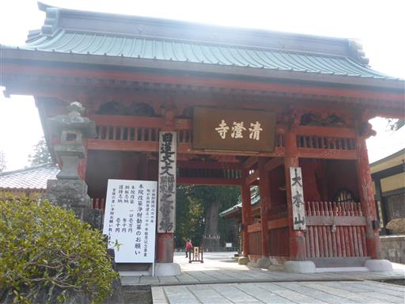
清澄寺境内。清澄寺は日蓮宗の大本山で、日蓮宗四霊場の1つに数えられる。
以前訪れた久遠寺に次ぐ寺格の寺院だ。

大堂（本堂）。1682年築で案外歴史のある建造物だ。
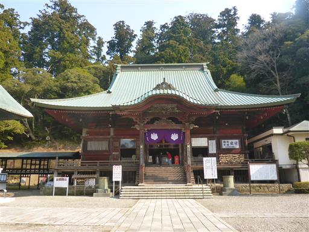
清澄寺の見学を終えたら先に進むことにする。
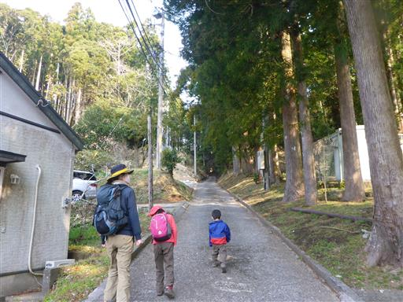
土が流れて木の根が露出している。今にも落ちてきそうだ。
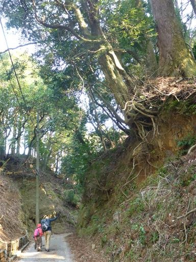
今回の道は基本的に林道が続く。ゲートがあるため車は来ないが、つまらない道だ。
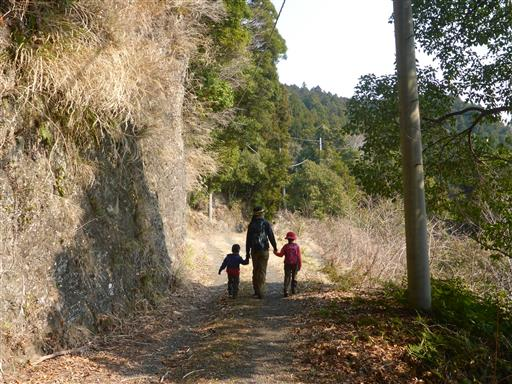
本日は春霞。遠くの景色はぼんやりとしか見えない。
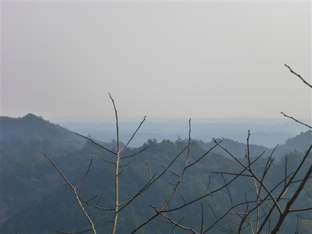
道は所々ぬかるんでいる。結構歩きにくい。
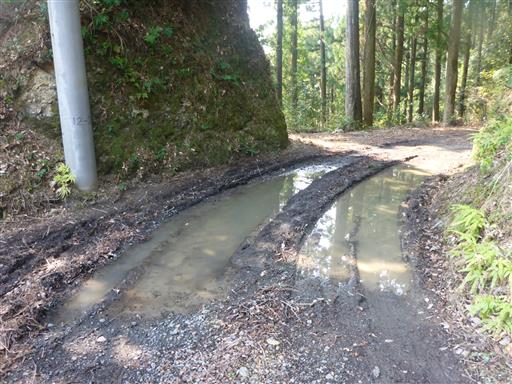
この辺りは東京大学の演習林がある。一般人の入場は禁止されている。
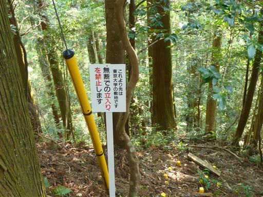
演習林になるだけあって、それなりに美しい自然林が広がっている。
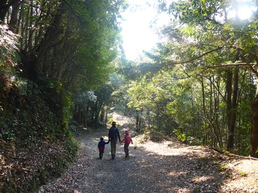
ゲートに到着。人一人がぎりぎり通れる隙間があるだけの、かなり厳重なゲートだ。
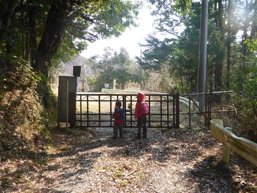
ゲートを超えて少し歩くと、麻綿原アジサイ公園に到着する。
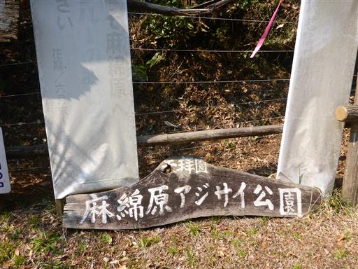
道の両側はアジサイが並んでいる。
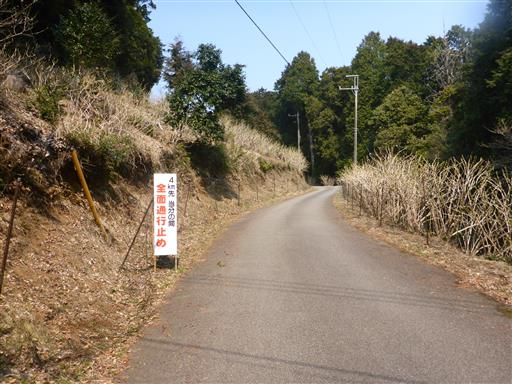
新芽が出始めている。ここは関東有数のアジサイの名所として知られていて、
アジサイの開花期には多くの観光客が訪れるようだ。
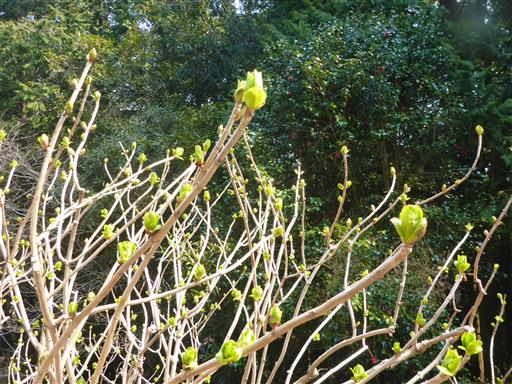
妙法生寺本堂に到着。アジサイが咲かないこの季節は閑散としている。
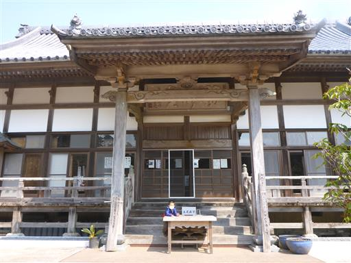
お願いサイコロを購入。1個十円。
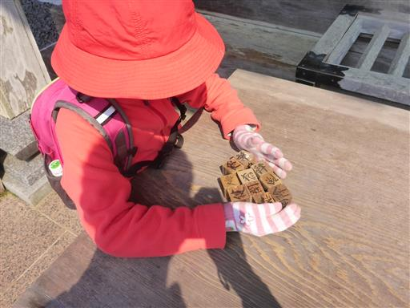
念を込めてここから投げるようになっている。どういうご利益があるのかはよく分からない。
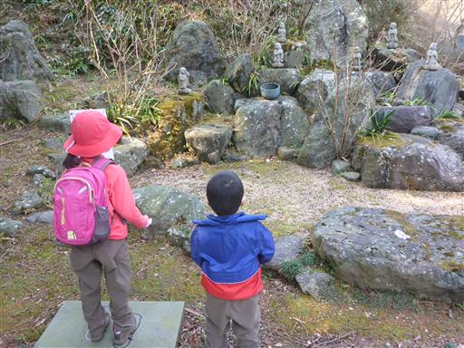
六即門を潜って天拝園の頂上を目指す。この辺りも一面アジサイだ。
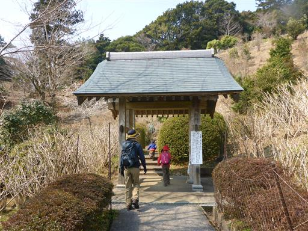
本日初めての登りらしい登り。といっても距離は短く、すぐに頂上に着いてしまう。
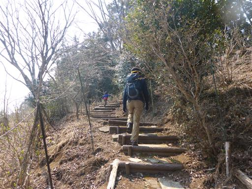
可憐なリンドウの花が咲いている。フデリンドウだろうか？
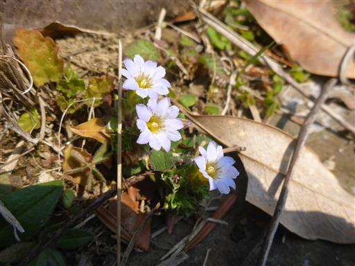
天拝園頂上の初日山に到着する。標高364m。
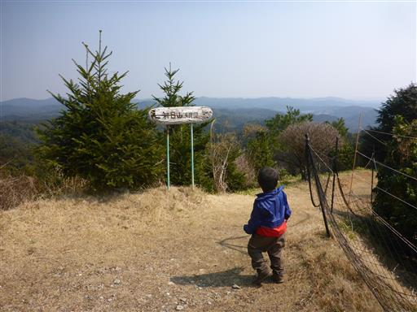
山頂からは大展望が広がるが、本日は霞がかかってぼんやりとした景色になっている。
ここから見えるはずの太平洋も、残念ながら見えない。
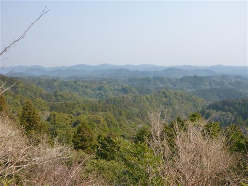
狭い山頂だが誰もいないので腰を下ろして昼食をとる。
昼食をとったら下山開始。
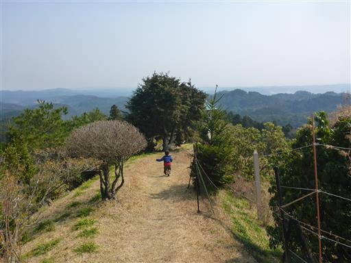
切り株の中から木が生えている。植えられたものだろうか？
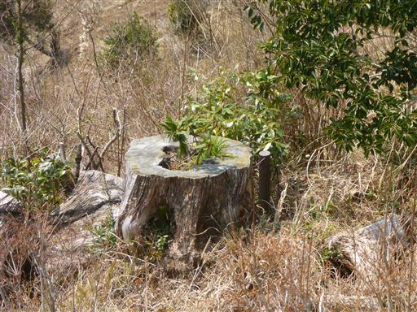
天拝壇。ここも展望が良いが、初日山山頂からの景色と大して変わりはない。
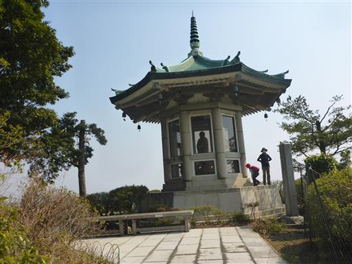
建物の中に入って景色を眺められるのかと思ったら、
日蓮上人像があって、中には入れないようになっていた。
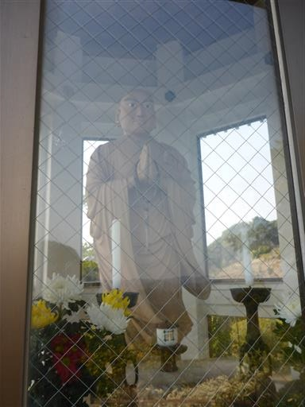
.妙法生寺まで下りてくる。ところどころにある解説板には、あまり堅苦しい文章は書かれていない。
しかし、いまいち何を言っているのか分からない…
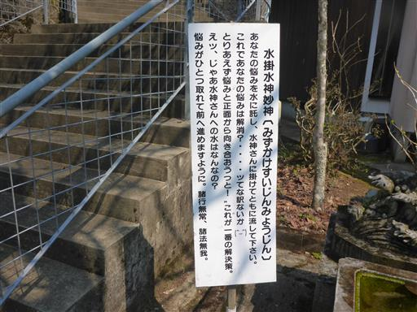
見学を終えたら、再び元来た林道を歩いて帰る。
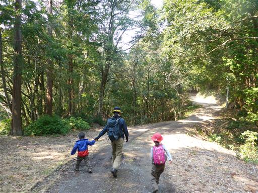
積みあがった白い砂利をみて子供たちが「王蟲だ」と言っている。
最近ナウシカを見た影響だが、あまり王蟲には見えない…
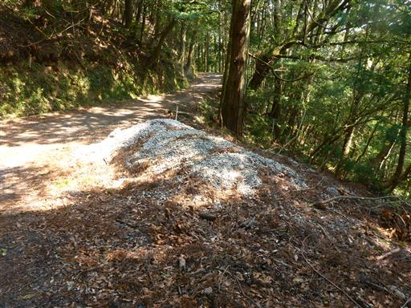
再び清澄寺に戻ってきたら、境内の裏にある山に登ってみる。

本日2度目の登り。いずれにせよ距離は短い。
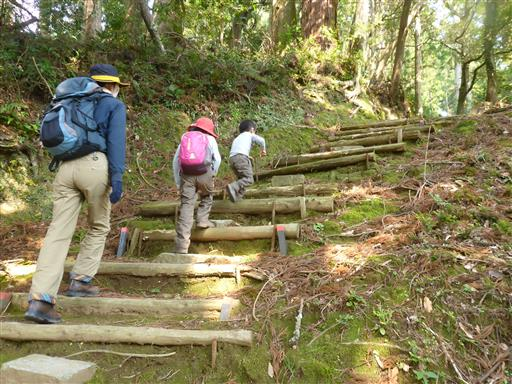
石幢。八角形で高さ2m、銘文によると1424年に建てられたものらしい。
千葉県指定有形文化財に指定されている。
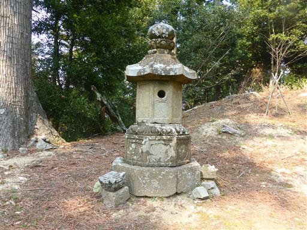
一登りで山頂が見えてきた。
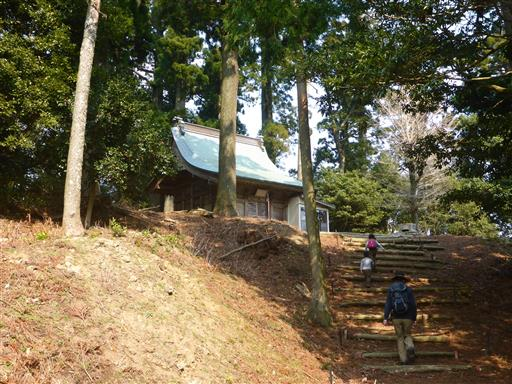
妙見山山頂に到着。標高377m。山頂には妙見堂が建てられている。
おそらくここが清澄山の最高地点だ。大きな木に囲まれた山頂で、展望は全くない。
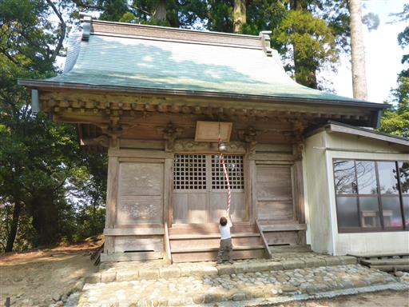
妙見山を下山し、改めて清澄寺を見学する。
本堂には美しい彫刻が施されている。
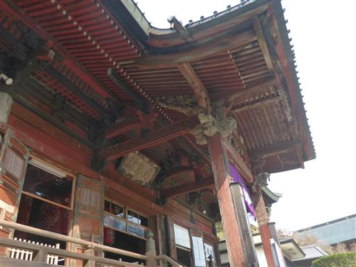
こちらは祖師堂。土台は真ん中のみで、両端は宙に浮いている。
何とも不思議な造りだが、バランスが悪そうだ。
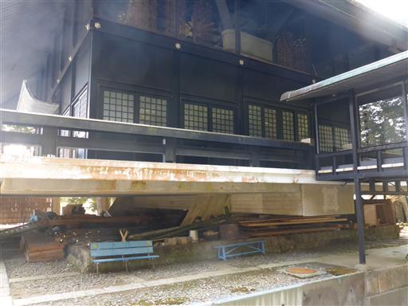
千年杉。樹齢はおよそ800年で、幹回り15mの巨木だ。
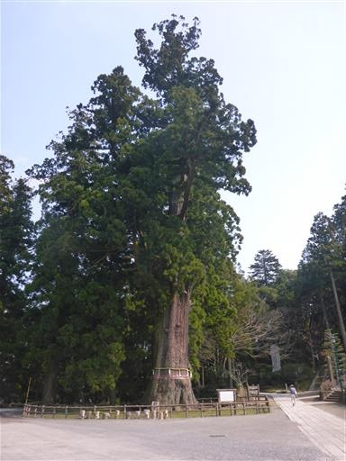
寺の見学を終えて帰ろうとしたら、売店の人に「仏舎利塔を見に行くと良い」と言われたため
息子と見学に行くことにする。寺から5分程度歩くと、馬鹿でかい仏舎利塔が見えてくる。
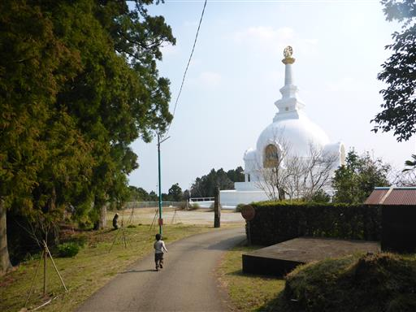
仏舎利塔に到着。日本の寺院は仏舎利塔ではなく五重塔が建造されることが多いため、
このような建造物は珍しい。日蓮宗は他と違って少し異質な感じがする。
本日は2つの寺を見学できたが、登山道はほとんどなく、少々歩き足りない1日だった。
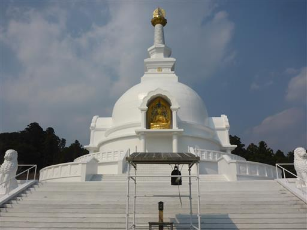